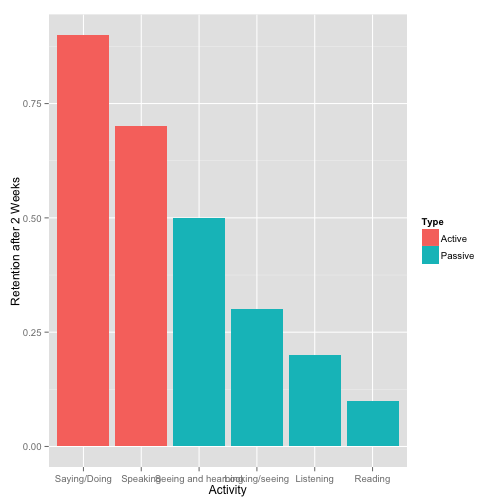
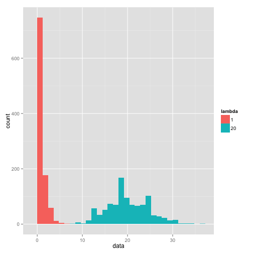

- Human being retain information far better when actively doing vs. passively hearing
- Distributions are hard for many beginning students to understand
- An interactive, modifiable display of a distribution can give students great statistical intuition
James Wang
Learning by doing is far better at creating retention after 2 weeks (Edgar Dale, 1946):

# Poisson of lambda 1 vs. 20
x1 <- rpois(n=1000, lambda=1); x2 <- rpois(n=1000, lambda=20); label1 <- as.factor(rep(1, times=1000)); label2 <- as.factor(rep(20, times=1000)); df1 <- data.frame(x1, label1); df2 <- data.frame(x2, label2); names(df1) <- c("data", "lambda"); names(df2) <- c("data", "lambda"); dftotal <- rbind (df1, df2)
ggplot(dftotal, aes(data, fill=lambda)) + geom_bar(binwidth = diff(range(dftotal$data))/30)

That last slide would have been much better with interactivity.
Try the app here!